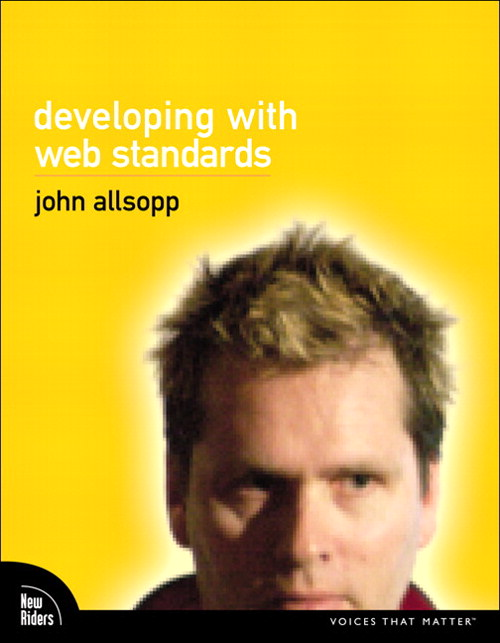

John Allsopp Guest Lecture
Malmö University's School of Technology invites you to a guest lecture by web standards guru John Allsopp

John Allsopp is a co-founder of the Web Directions conference series, and author of one of the earliest books on Microformats, and more recently of Developing with Web Standards. As a software developer, long standing web development speaker, writer, evangelist and self proclaimed expert, he’s spent the last 15 years working with and developing for the web.
As the head developer of the leading cross platform CSS development tool Style Master, and developer and publisher of renowned training courses and learning resources on CSS and standards based development, and author of the highly regarded Dao of Web Design he has been widely recognized as a leader in these fields.
The Talk

During his first visit to Sweden, John will give a two-part talk looking both to the past and to the future. Drawing from the last 30 years of computing, he will examine the rise of the web, and point to trends shaping what comes next. Then, John will speak to something undeniably trendy: HTML5. What's the fuss about, and what's possible today?
The primary audience is Malmö University students with some web development knowledge, but the talk is suitable for anyone with a curiosity on the state of the web.
Where and When?
- Monday, November 5th, 15:00-17:00 (talk starts at 15:15).
- The talk will be 2 x 45 minutes, with a short break in the middle.
- Ubåtshallen, room U305 (third floor). Östra varvsgatan 9A.
Register
As availability is limited, registration is required. Register here, or through the handy form below.